[1] 0.2074665O problema com o MAPE
Taleb (2025, 79) argumenta contra a utilidade do desvio-padrão (\(\sigma\), ou \(\text{RMSE}\)) como uma medida de dispersão de uma amostra ou variável aleatória.
Enquanto o desvio médio absoluto (MAD) designa algo claro, o desvio-padrão tem interpretação confusa!
Segundo Taleb (2025, 81), o desvio-padrão predominou na estatística por apresentar uma eficiência estatística (gaussiana) maior: se os dados tem distribuição normal, o desvio-padrão é 12% mais eficiente do que o MAD!
\(\text{MAD}\) é sempre menor do que o desvio-padrão, por conta da desigualdade de Jensen (Taleb 2025, 80).
\[ \frac{\sigma}{\text{MAD}} = \frac{\sqrt{\mathbb E(X^2)}}{\mathbb E(|X|)} = \sqrt{\frac{\pi}{2}} \approx 1,25 \tag{1}\]
\[ \text{sMAE} = \frac{\text{MAE}}{\bar x} \tag{2}\]
\[ \text{wMAPE} = \frac{\sum_{i=1}^n |A_i - F_i|}{\sum_{i = 1}^n |A_i|} \tag{3}\]
O sMAE pode ser visto como um erro percentual, porém sempre em relação ao estimador de tendência central
O MAPE, por outro lado, muda a base (denominador) em função do valor do dado amostral:
\[ \text{MAPE} = \frac{1}{n}\sum_{i = 1}^n \left | \frac{A_i - F_i}{A_i} \right | \tag{4}\]
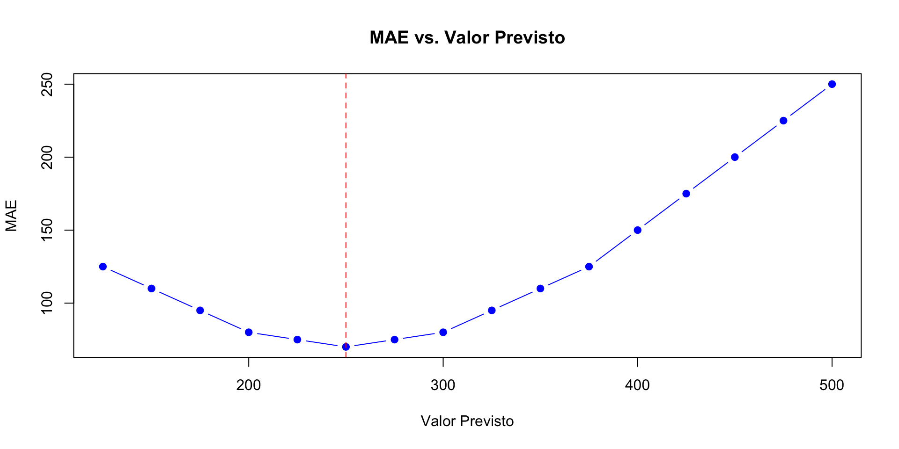
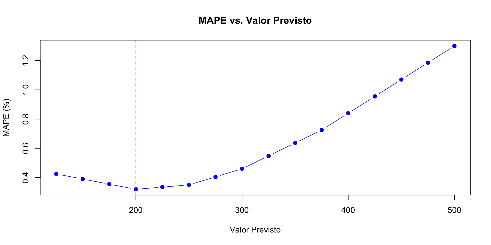
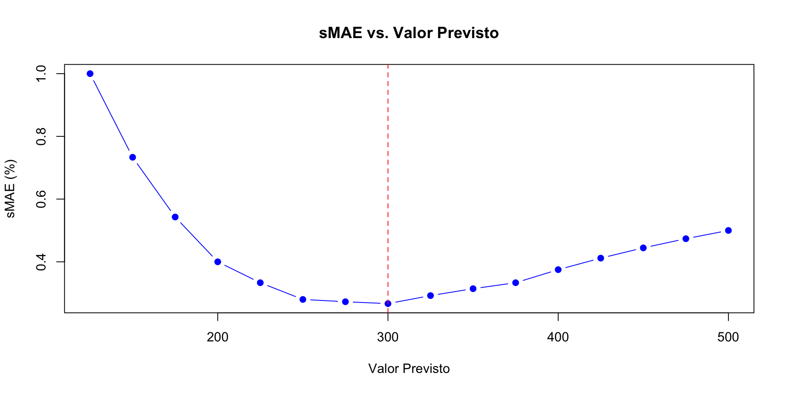
\[ \text{sMAPE} = \frac{2}{n} \sum_{i=1}^n \frac{ |A_i - F_i|}{|A_i| + |F_i|} \tag{5}\]
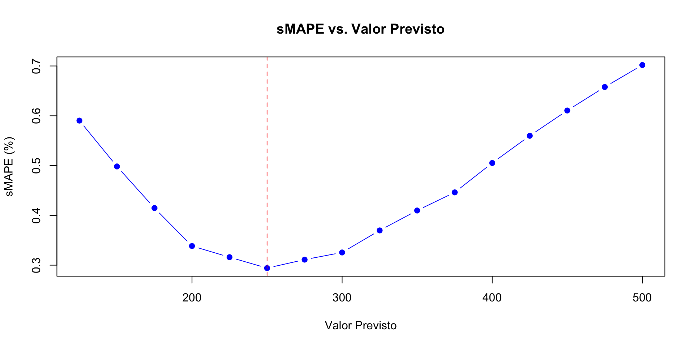
\[ \text{MAAPE} = \frac{1}{n}\sum_{i=1}^n \arctan \left ( \left | \frac{A_i - F_i}{A_i} \right | \right) \tag{6}\]
Segundo Kim e Kim (2016, 678):
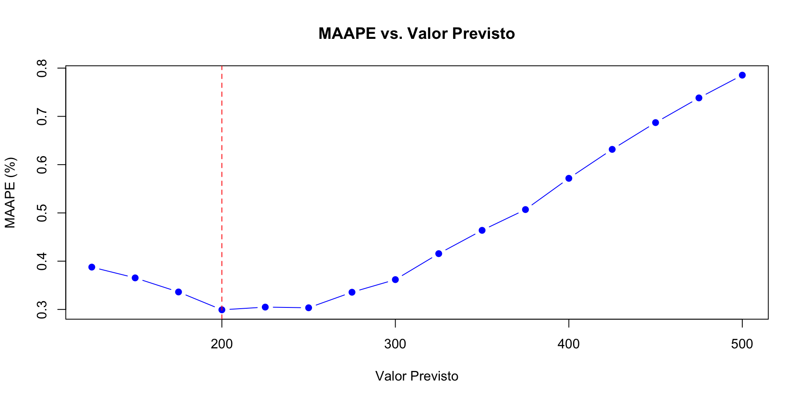
Foram gerados dados aleatórios com distribuição \(\mathcal N(500, 175^2)\), i.e., com \(\text{CV} = 35\%\)
Foram calculados para essa amostra média, mediana, moda e média aparada (10%)
Espera-se que o MAE seja aproximadamente igual a \(\sigma/1,25\), i.e., \(\text{MAE} \approx 140\)!
Espera-se que o sMAE seja aproximadamente igual a \(\text{CV}/1,25\), i.e., \(\text{sMAE} \approx 28\%\)!
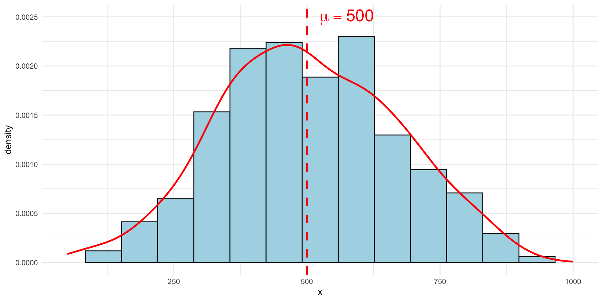
Figura 1: Amostra aleatória com distribuição normal com média 500 e desvio-padrão 175.
| Est. | MAE | sMAE | MAPE | MAAPE | sMAPE |
|---|---|---|---|---|---|
| média | 135,66 | 27,0% | 37,0% | 28,7% | 28,4% |
| mediana | 135,35 | 27,5% | 36,2% | 28,3% | 28,4% |
| moda | 137,47 | 29,7% | 34,5% | 27,8% | 28,9% |
| média aparada (10%) | 135,63 | 27,1% | 36,9% | 28,7% | 28,4% |
A distribuição lognormal é bem comum na Engenharia de Avaliações!
Na distribuição lognormal, moda, média e mediana não coincidem, como na distribuição normal!
Para baixos valores de CV na distribuição lognormal (<0,2), quase não se nota a diferença para a distribuição normal!
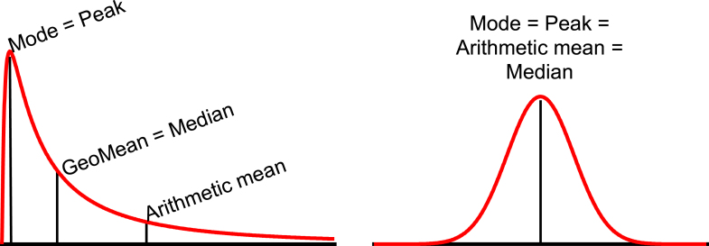
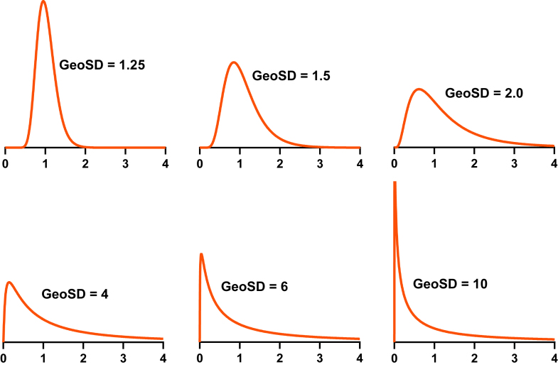
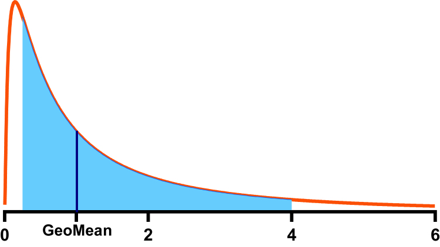
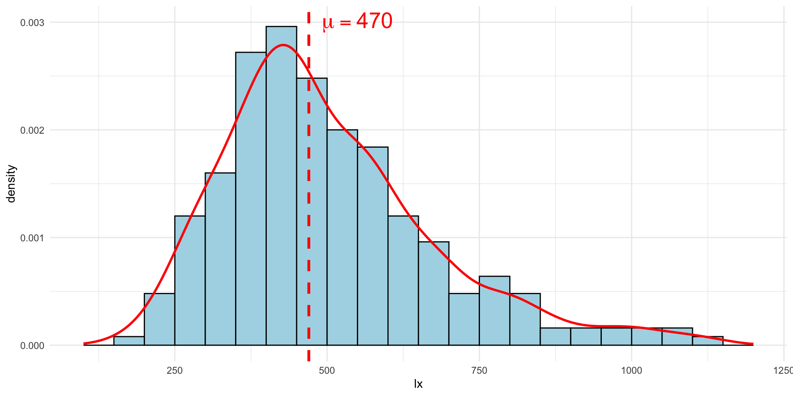
Figura 2: Amostra aleatória com distribuição lognormal com mediana 470 e desvio-padrao igual a 0,35 (na escala log).
| Est. | MAE | sMAE | MAPE | MAAPE | sMAPE |
|---|---|---|---|---|---|
| média | 135,14 | 27,0% | 29,8% | 27,1% | 26,8% |
| mediana | 131,06 | 28,3% | 26,7% | 24,7% | 26,0% |
| moda | 135,38 | 31,6% | 25,7% | 24,1% | 26,9% |
| média aparada (10%) | 132,66 | 27,4% | 28,3% | 25,9% | 26,3% |
MAPE parece ok, porém minimiza a moda!
sMAPE minimiza a mediana!
MAPE, MAAPE e sMAPE tem praticamente as mesmas magnitudes, podendo ser utilizadas para interpretação!
Foram gerados dados aleatórios com distribuição \(\mathcal N(500, 200^2)\), i.e., com \(\text{CV} = 40\%\)
Foram calculados para essa amostra média, mediana, moda e média aparada (10%)
Espera-se que o MAE seja aproximadamente igual a \(\sigma/1,25\), i.e., \(\text{MAE} \approx 160\)!
Espera-se que o sMAE seja aproximadamente igual a \(\text{CV}/1,25\), i.e., \(\text{sMAE} \approx 32\%\)!
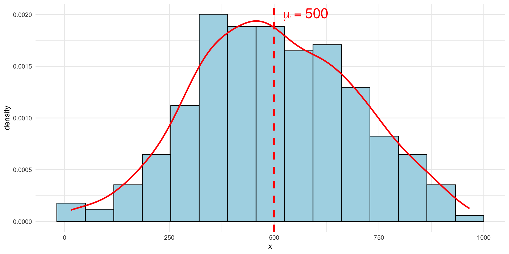
Figura 3: Amostra aleatória com distribuição normal com média 500 e desvio-padrão 200.
| Est. | MAE | sMAE | MAPE | MAAPE | sMAPE |
|---|---|---|---|---|---|
| média | 155,04 | 30,9% | 63,7% | 32,9% | 33,1% |
| mediana | 154,69 | 31,5% | 62,2% | 32,5% | 33,0% |
| moda | 157,10 | 34,3% | 58,6% | 31,8% | 33,7% |
| média aparada (10%) | 155,01 | 30,9% | 63,6% | 32,9% | 33,1% |
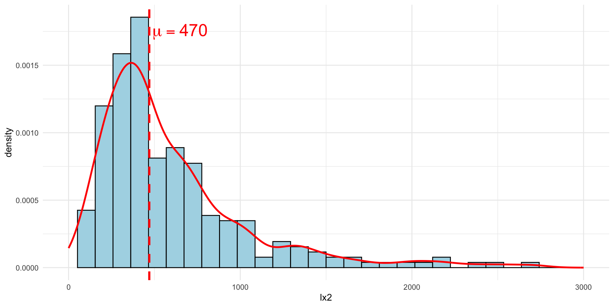
Figura 4: Amostra aleatória com distribuição lognormal com mediana 470 e desvio-padrao igual a 0,70 (na escala log).
| Est. | MAE | sMAE | MAPE | MAAPE | sMAPE |
|---|---|---|---|---|---|
| média | 320,20 | 53,4% | 81,4% | 52,4% | 53,0% |
| mediana | 298,17 | 65,5% | 58,4% | 43,4% | 49,4% |
| moda | 313,13 | 85,5% | 50,4% | 41,0% | 52,5% |
| média aparada (10%) | 304,59 | 58,4% | 68,2% | 47,5% | 50,7% |
MAPE parece ok para a moda!
sMAPE minimiza a mediana!
MAAPE e sMAPE mais estáveis entre as medidas!
Foram gerados dados aleatórios com distribuição \(\mathcal N(500, 200)\), mais 20% de dados contaminantes, com distribuição \(\mathcal N(500, 400)\)
Foram calculados para essa amostra média, mediana, moda e média aparada (10%)
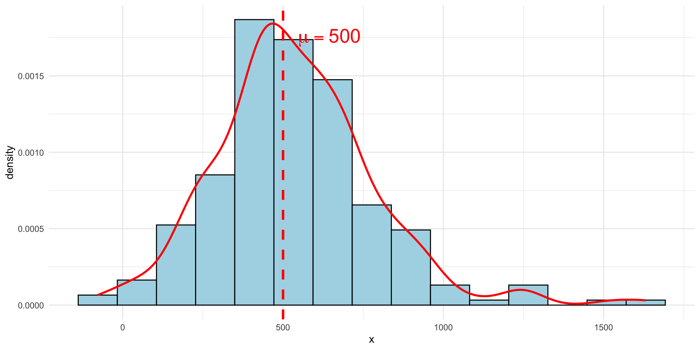
Figura 5: Amostra aleatória com distribuição normal contaminada.
| Est. | MAE | sMAE | MAPE | MdAPE | MAAPE | sMAPE |
|---|---|---|---|---|---|---|
| média | 188,44 | 35,0% | 75,9% | 25,2% | 36,3% | 37,4% |
| mediana | 187,65 | 36,5% | 72,5% | 25,5% | 35,5% | 37,4% |
| moda | 191,30 | 40,8% | 67,0% | 27,8% | 34,7% | 38,3% |
| média aparada (10%) | 187,80 | 35,7% | 74,1% | 25,1% | 35,9% | 37,3% |
MAPE totalmente fora de linha!
MdAPE (Median Absolute Percentage Error) mostrou-se adequado!
sMAPE pareceu um pouco inflado, porém não ficou muito fora de linha
O MAPE parece ser uma métrica adequada apenas quando os dados se apresentam em distribuição lognormal
Com outras distribuições, o MAPE parece bem fora de linha
Há outras métricas mais interessantes, como o MAAPE e o sMAPE
O MAAPE mostrou-se mais resistente à outliers
MAAPE parece ter uma ordem de grandeza mais representativa da dispersão dos erros!